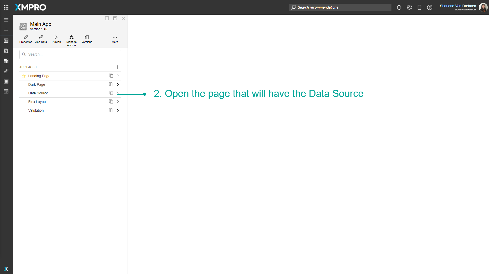
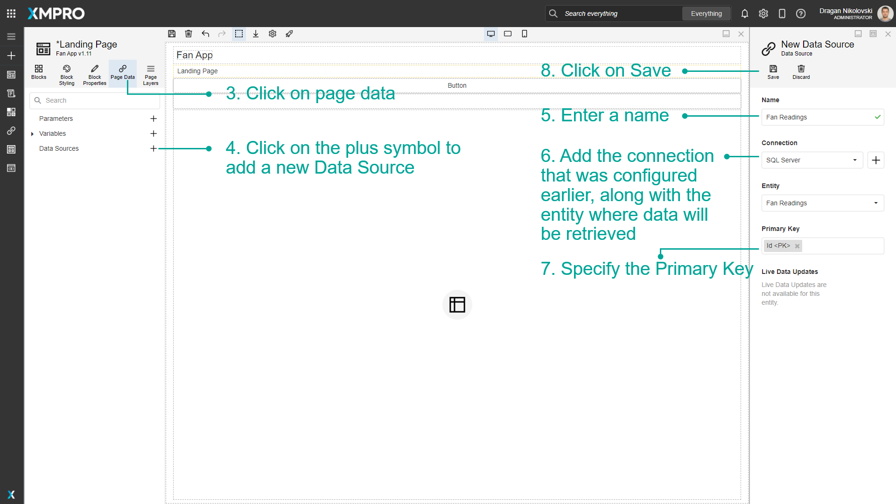
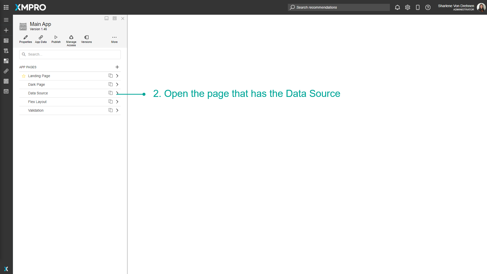

Manage Data Sources
Data Sources can be created for a Page in the Application. They are a way to link to a specific Entity in a Connection's Entities, for example, a table in a SQL database. Data Sources are managed through the Page Data tab of a Page. Data Sources allow you to display, use, manipulate or store data from a connected source of data such as an SQL Server Database.
Note
It is recommended that you read the article listed below to improve your understanding of Data Integration.
Creating a Data Source
To create a Data Source on the Page of an Application, follow the steps below:
Open the Editor for the Application.
Open the Page that will have the Data Source.

Click on Page Data.
Click on the plus symbol to add a new Data Source.
Enter a name.
Add the Connection and Entity where data will be retrieved.
Specify the Primary Key.
Click on Save.

Edit a Data Source
To edit a Data Source, follow the steps below:
Open the Editor for the Application.
Open the Page that has the Data Source.

Click on Page Data.
Click on the edit button.
Edit the details of the Data Source.
Click on Save.
Delete a Data Source
To delete a Data Source, follow the steps below:
Open the Editor for the Application.
Open the Page that has the Data Source.

Click on Page Data.
Click on the edit button.
Click on Delete.
Confirm that you want to delete the Data Source.
Further Reading
Last modified: August 19, 2025